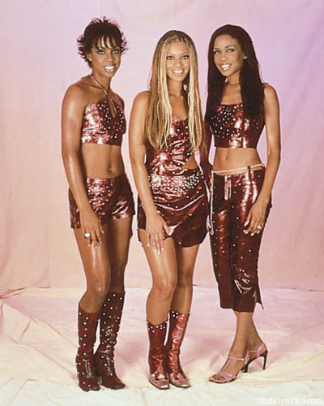

ALL ABOUT ME
MY NAME IS ANNA I AM 14 ILL BE 15 IN NOVEMBER. I AM A VERY OUTGOING PERSON IM ALWAYS CHEERFUL NO MATTER WHAT. THE THINGS I LIKE TO DO FOR FUN IS LISTEN TO MUSIC AND JUST HANG OUT WITH MY FRIENDS. I LIKE TO PLAY BASKETBALL EVEN THOUGH I DONT KNOW HOW TO PLAY. I USE TO BE A CHEERLEADER BUT I DIDNT FINISH IT. IM GOING TO CENTRAL NEXT YEAR AND WHEN I DO IM SIGNING UP FOR TRACK AND TENNIS. BECAUSE I SEE THE WILLIAMS SISTERS PLAYING AND IT JUST MAKES ME WANNA PLAY TENNIS. AND I LOVE SCHOOL I LOVE LEARNING ABOUT DIFFERENT THINGS. BUT IM NOT A TRUOBLE MAKER BUT WHEN PEOPLE TALK JUNK ILL ASK THEM ABOUT IT BEFORE GETTING AN ATTITUDE. I DID GET IN TO ALOT OF FIGHTS IN MY MIDDLE SCHOOL BUT WHEN I GO TO CENTERAL IM NOT GONNA GET INTO ANY FIGHTS. WELL I HAVE FUN IN SCHOOL AND I CANT WAIT TILL IT STARTS. WELL THAT IS ALL ABOUT ME.